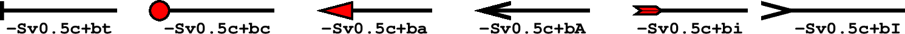

繪製矢量/箭頭¶
矢量是一個有大小和方向的量，通常用箭頭↗ 表徵矢量。一個矢量由兩個獨立的部分組成：矢量線和矢量頭。矢量線與一般的線沒有區別，通常由畫筆屬性（畫筆）控制。這一節則主要介紹矢量頭的屬性及控制方式。
GMT 中能夠繪製矢量的模塊有 plot、 plot3d、 grdvector、 velo 、 rose、 ternary 和 polar。其中最常見的繪製矢量的模塊是 plot。
下面的命令使用 plot 的 -Sv 選項繪製了一個最簡單的矢量。
echo 1 1 0 3 | gmt plot -R0/5/0/2 -JX5c/2c -Sv0.5c+e -W1.5p -Gred -png vector
接下來將介紹如何通過在 -Sv0.5c 後增加更多的子選項來進一步修改矢量頭的屬性。
矢量頭位置及形狀¶
在繪製矢量時，默認只繪製矢量線而不繪製矢量頭。下面的幾個子選項用於指定矢量頭的位置以及形狀：
+b[t|c|a|A|i|I][l|r]：在矢量線的起點加上矢量頭
+e[t|c|a|A|i|I][l|r]：在矢量線的終點加上矢量頭
+m[f|r][t|c|a][l|r]：在矢量線的中間加上矢量頭
t|c|a|A|i|I 用於控制矢量頭的形狀。取不同值所對應的矢量頭形狀如下圖所示：
- l|r 表示只繪製矢量頭的左半邊或右半邊（默認兩邊都繪製）。其中左定義爲從矢量起點看向終點時的左側
- f|r 在 +m 中用於指定矢量頭的方向沿着正方向或逆方向（默認爲正方向，即從起點指向終點）
注解
+m 不能與 +b 或 +e 一起使用
+l 只繪製左半個矢量頭
+r 只繪製右半個矢量頭
+aangle 用於控制矢量箭頭的頂端的夾角，默認值爲30度。若矢量頭形狀爲 t 或 c 則表示端點線或端點圓圈的大小
+hshape 進一步控制矢量頭 a 的形狀，其中 shape 可以取-2到2之間的值。設置該子選項的值等效於修改參數 MAP_VECTOR_SHAPE （默認值爲0）
下面展示了 +h 後取不同值的矢量箭頭的形狀：
矢量頭線條顏色和填充色¶
默認情況下，-W選項同時控制矢量線和矢量頭的畫筆屬性，-G 選項則控制矢量頭的填充色。下面兩個子選項可以單獨控制矢量頭的畫筆屬性和填充色。
- +ppen 設置矢量頭的畫筆屬性，pen 爲 - 表示不繪製矢量頭的輪廓
- +gfill 設置矢量頭的填充色，fill 爲 - 表示不填充
其它屬性¶
還可以使用如下子選項進一步控制矢量頭的屬性：
- +nnorm 默認情況下，矢量頭的大小不隨着矢量線的長度變化而變化，這可能會出現矢量線很短而矢量頭過大，或者矢量線很長而矢量頭過小的情況。該子選項使得矢量長度小於 norm 時，矢量頭的屬性（畫筆寬度，箭頭大小）會根據矢量長度按照 length/norm 縮放
- +t[b|e]trim 用於增長或縮短矢量線首端或尾端的長度。其中 b 表示首端，e 表示尾端。 trim 爲正值表示縮短矢量線，爲負值表示增長矢量線。也可以直接使用 +ttrim1/trim2 分別爲首端和尾端指定增長/縮短量。
矢量類型及輸入數據格式¶
GMT提供了三類矢量：
- 笛卡爾矢量：矢量起點到終點的矢量線以直線方式連接
- 地理矢量：矢量起點到終點之間的矢量線以大圓弧路徑連接
- 弧形矢量：矢量線是以某一點爲中心的一段圓弧
plot 模塊中：
- -Sv 或 -SV 用於繪製笛卡爾矢量
- -S= 用於繪製地理矢量
- -Sm 用於繪製弧形矢量
下面的例子分別繪製了三種矢量：
gmt begin arrows pdf,png
# 笛卡爾矢量
echo 0.5 1.5 4.5 1.5 | gmt plot -R0/5/0/5 -JX1.75i -Sv0.2i+s+b+e -W1.5p -Gred
# 地理矢量
echo 10 -35 90 8000 | gmt plot -R0/90/-41.17/41.17 -JM1.75i -S=0.2i+b+e -W1.5p -Gred -X2i
# 弧形矢量
echo 0.5 0.5 0.9i 0 90 | gmt plot -R0/5/0/5 -JX1.75i -Sm0.2i+b+e -W1.5p -Gred -X2i
gmt end
三種矢量：（左）笛卡爾矢量；（中）地理矢量；（右）弧形矢量
笛卡爾矢量和地理矢量¶
對於笛卡爾矢量和地理矢量，輸入數據的格式爲:
X Y angle length
其中X和Y是矢量起點座標，angle 爲矢量方向（相對於水平方向逆時針旋轉的角度或相對於北向順時針的方位角），length 爲矢量線長度（長度單位爲 c|i|p 或km）。
使用如下子選項則可以指定其它輸入數據格式：
- +s 表示將輸入數據的中的 angle 和 length 解釋爲矢量的終點座標
- +j[b|c|e] 表示將輸入數據中的X和Y座標解釋爲矢量的起點座標、中點座標或終點座標
對於地理矢量，還可以使用如下選項：
- +q 表明輸入數據中的 angle 和 length 表示相對於某個指定極點的大圓路徑的起始和結束的角度。該極點默認爲北極，可以使用 +o 修改該點的位置
- +oplon/plat 用於指定 +q 中大圓路徑中的傾斜極點
對於笛卡爾矢量而言，還可以使用：
- +zscale[unit] 表示輸入數據中的 angle 和 length 被解釋爲矢量的X分量dx和Y分量dy，然後計算出對應的極座標下的方向和長度，並將矢量長度乘以 scale
圓弧矢量¶
對於圓弧矢量，輸入數據中需要給定圓弧對應的圓心座標、半徑，以及圓弧起始和結束的角度。